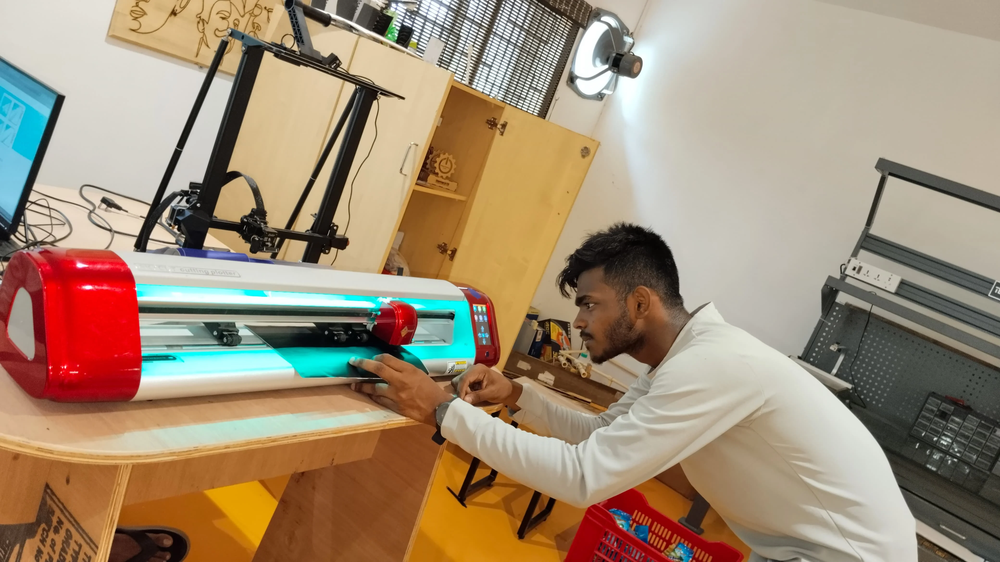

Vinyl Cutting – Custom Name & RX 100 Bike Sticker
Introduction
As part of my hands-on journey in digital fabrication and rapid prototyping, I explored vinyl cutting to produce customized stickers. Using SignMaster V5 software and a vinyl cutter, I created two unique designs:
- My name:"ANANDHAKUMAR A"
- A classic RX 100 bike logo sticker

This project helped me understand the end-to-end process of digital vector design, machine operation, material handling, and final sticker application.
Tools Used:
- Software: SignMaster V5
- Hardware: Vinyl Cutter
- Materials:Adhesive vinyl sheet, transfer tape
- Designs:Text-based name sticker and RX 100 logo
Design Preparation in SignMaster
I started by launching SignMaster V5, an industry-grade software tailored for vinyl cutting. Using its clean and intuitive interface, I performed the following steps:

Name Design:


- Selected the Text Tool
- Entered “ANANDHAKUMAR A” into the workspace
- Explored and applied different font styles to personalize the sticker
- Aligned and resized the text for optimal cutting
RX 100 Logo:


- Imported a reference image of the Yamaha RX 100 logo
- Used the Trace Image tool to convert it into a clean vector path
- Refined edges and curves to match the original design closely
- Positioned the traced logo for efficient use of material
Blade Intensity & Material Setup


Before starting the cut:
- I set the blade intensity (cutting force) according to the vinyl thickness
- Ensured the blade cut only the top layer of vinyl without slicing through the backing sheet
- Loaded the vinyl roll and aligned it properly to avoid skewed cuts
Area Test & Verification
To ensure material efficiency:

- I performed an area test using SignMaster to simulate the cutting path
- This test verified spacing, alignment, and confirmed the design would fit without overlapping or wasting material
Cutting Execution
Once the tests were complete:


- I sent both designs to the vinyl cutter
- The machine precisely followed the vector paths, cutting both the name and RX 100 sticker cleanly
- Each curve, angle, and stroke of the RX 100 logo was sharply replicated
Weeding & Finishing
After the cut:
- I carefully weeded out the unwanted vinyl around both designs
- Only the desired elements (text and logo) remained on the vinyl backing
For final application:

- I used transfer tape to pick up the sticker
- Carefully applied it onto surfaces (like my laptop for the name, and optionally a bike panel for the RX 100)
- Ensured proper alignment and bubble-free adhesion

Final Results
The outcome was precise and professional:
- The name sticker added a personal identity to my laptop

- The RX 100 sticker came out clean, crisp, and true to the iconic motorcycle branding